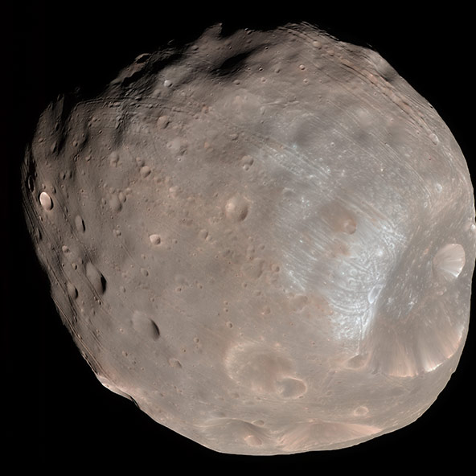

Deimos
Deimos is the smaller and outer of the two natural satellites of the planet Mars. With a mean radius of 6.2 km it takes 30.3 hours to orbit Mars.
- Discovered by:
- Asaph Hall
- Discovery date:
- Adjectives:
- Deimosian

Phobos
Phobos, Mars’s larger moon, is a small, irregularly shaped object with a mean radius of 11 km and is seven times more massive than the outer moon, Deimos.
- Discovered by:
- Asaph Hall
- Discovery date:
- Adjectives:
- Phobian